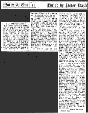

Grace Archer is dead!The new Plan came this morning. I am down to preach at Nether Whitacre, Gospel Lane and Yardley Green Road. One of these is on Temperance Sunday. The team is planned for Yardley Green Road that day. Mr Jones [Rev. Arnold B. Jones] is not once down for Acocks Green. At work I continued my experiment on Pelargonylcholine Iodide. What a sensation tonight! Grace Archer got bumped off. I don’t usually listen to The Archers but yesterday there was a fire in the stables. Grace went in to rescue the horses, and was struck by a falling beam. Then there was a scene where Grace and Phil were going to hospital in the ambulance, and listeners heard her say, “Phil, I love you, Phil.” The programme ended with Phil breaking the news that Grace had died in his arms. I felt astonishingly depressed. I seemed to see Freda and me instead of Grace and Phil. I was glad I was spending the evening with her. The Archers may be very true to life. But this latest idea is stupid. NO one wants the hero to kick the bucket. As I wrote in an article [letter] to the Evening Despatch:—
[The letter appears in the Evening Despatch on Monday 26th]. |
|
<#551011#> |
Ralph Vaughan WilliamsThis evening’s CBSO concert was an event which Freda and I will be able to look back upon as one of the outstanding of our musical memories. This was perhaps the last time we should be able to see and hear Dr Ralph Vaughan Williams conduct one of his own works. I would not have missed it for anything. Mr & Mrs Powley were going to see Ro in hospital so they dropped us off in town. We had 5/6d reserved seats G39 and 40 in the Lower Gallery of the Town Hall. The programme started with the National Anthem, then Vaughan Williams conducted his own Serenade to Music with the B.B.C. Midland Singers, including Ann Pardoe. It is one of the most beautiful pieces one could ever hear. Vaughan Williams wrote it as a gift for Sir Henry Wood on the occasion of his Jubilee Concert at the Royal Albert Hall on Wednesday 5th October 1938, and the words are from Shakespeare’s The Merchant of Venice, Act V, Scene 1. The Serenade to Music lasted only a quarter of an hour. Vaughan Williams received a great ovation and then left the platform. I wished he could have stayed and conducted his Symphony No. 4 in F minor, but he is 83 and Rudolf Schwarz was conducting the rest of the programme, so we were happy just to have seen him. His 4th Symphony could not be more different from the Serenade to Music. Not having heard it before, we were surprised by the fortissimo introduction and the grim feeling of the music. But we were even more surprised when, a few minutes later, Vaughan Williams and his wife [Ursula] came and sat in the row in front of us, just to our left, with no one in between. He held a big ear-trumpet to his ear and listened intently to the performance of his symphony. The great composer and his wife left at the interval. The second half of the concert was devoted to Beethoven’s Symphony No. 7 in A, a perfect contrast to the Vaughan Williams. I see from the inside front cover of the programme that all seven of Vaughan Williams’ symphonies are available on Decca records, with the London Philharmonic Orchestra conducted by Sir Adrian Boult. I should rather like to have these. Sir Eugene Goossens is to conduct next month’s Tuesday concert with Rosalyn Tureck as soloist, and Rudolf Schwarz the December concert with Julius Katchen. |
|
|
E.W. Barnes at K.E.S.A slightly edited version of this article I wrote about Bishop Barnes was published today in the Birmingham Weekly Post:
As a schoolboy Ernest William Barnes, who was to become Bishop of Birmingham, showed great prowess as a debater. At King Edward’s School, New Street, he was a prominent member of the Debating Society. He was no less prominent in the activities of the Natural History Society, and an old minutes-book of 1884–94 tells us that Barnes was the geological curator, that he lectured on photography, asked questions about comets, and, on one occasion, caused no little disturbance when he attended a paper by C.Y. Flewitt on “Crocodiles and Alligators”. In his minutes, the then secretary wrote: “At the conclusion of the lecture, a statement of Flewitt’s was disputed by Barnes on totally insufficient authority; the accuracy of Barnes’ remarks being justly called in question by Jones, S.C.” This has then been crossed through and an amendment has been substituted: “Then Barnes got up and with a laudable desire to enliven the proceedings, asked two or three pointed and intelligent questions, which betrayed his keen interest in and evident appreciation of the lecture.” One wonders just what it was that Barnes found to disagree with on the subject of crocodiles and alligators! On another page of the minutes-book is an account by Barnes of a paper called “A Trip to Dover.” In rather scrawly handwriting, he says: At a meeting held Nov. 17 in the museum S.N. Sedgwick gave a paper on “A Trip to Dover”. To use the words of M. Talleyrand, “C’était magnifique.” It was a splendid lucid account of Dover and its neighbours Folkestone and Hythe. The beginning of the paper described an ideal picture of an early morning’s doings during the holidays. The lecturer illustrated his paper by sketches, photographic views and views taken by himself. It is simply impossible to critizise [sic] such a paper adversely. The beauty of the sketches was only equalled by the atrocity of the puns; both contributed to make the paper one of the most enjoyable ever heard, and it was the firm opinion of the audience that that had not the bashfulness of the lecturer intervened a poem of idyllic verse would have crowned the arch of one of the most delightful papers that the English language has ever had the honour!, yea the unmeasurable honour to produce. — Signed ………… (Nov 24 1890). This has been crossed out with an indelible pencil and a footnote added:— “(Written by E.W. Barnes but NOT read)”, and underneath is a slightly less effusive account of the meeting! How did Barnes come to write these minutes? He was never the honorary secretary but I like to imagine that he “borrowed” the book from the unsuspecting official and inscribed his own minutes. Perhaps an old reader might know. E.W. Barnes left New Street in 1893 with a Major Scholarship in Mathematics at Trinity College, Cambridge. He took a First in the second part of the Mathematical Tripos in 1898, and later became President of the Cambridge Union and junior dean of the college. In 1916 he was nominated Master of the Temple by Asquith, and two years later Lloyd George made him a canon of Westminster. It was Ramsay Macdonald who made the choice of Dr. Barnes as Bishop of Birmingham. I personally met Dr. Barnes on two or three occasions. He was both gracious and compelling, a formidable yet kindly personality, and that is how best I shall remember him. |
 |